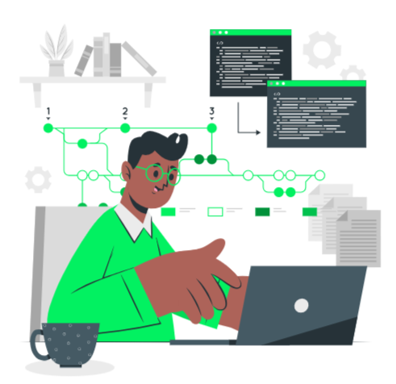
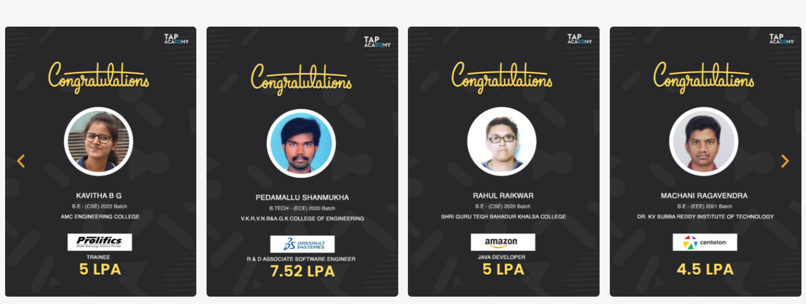

What is a Full Stack Developer?
A software engineer that is proficient in both front-end and back-end programming is known as a full-stack developer.
They have experience dealing with a variety of web development technologies, such as HTML, CSS, JavaScript, databases, servers, APIs, and frameworks, among others.
In order to generate the platform’s visual elements, the developer would design the user interface on the front end using tools like HTML, CSS, and JavaScript. Additionally, they would leverage front-end frameworks like React or Angular to speed up the development
In order to manage the data and process requests, the developer would write the server-side code using tools like Node.js and PHP. To store user data and other data, they would also employ databases like MySQL or MongoDB.
The integration of APIs (Application Programming Interfaces) for functions like authentication, messaging, and notifications would also fall within the purview of a complete stack developer.
Why Full Stack Developers are in high demand?
- Versatility:Full-stack developers are very versatile and able to handle a variety of tasks within a team because they have the knowledge to work on all facets of a web application.
- Cost-effectiveness: For a business, engaging a full-stack developer may be more affordable than hiring a number of specialists to work on various aspects of a web application.
- Efficiency:Full-stack developers can work more quickly since they can manage several facets of a project on their own, without the assistance of other team members.
- High demand:The US alone has over 33,000 full-stack developer job vacancies, with an average compensation of over $110,000 per year, according to Indeed. Full stack development is an extremely alluring job choice due to the high demand and good pay.
- Start-up culture:As start-up cultures have developed, there is now a greater need for full-stack developers because they can do numerous responsibilities in a smaller team, which makes them perfect for start-up settings.
Responsibilities of a Full stack developer

A Full Stack Developer’s responsibilities can change based on the project and organization they are working on. However, Full Stack Developers frequently handle the following tasks:
- Web application creation and upkeep: Full Stack From the front end to the back end, developers are in charge of designing, creating, and managing online applications. To produce a seamless user experience, they collaborate with a variety of programming languages, frameworks, and technologies.
- Collaborating closely with cross-functional teams:To make sure the web application is meeting business and user needs, Full Stack Developers collaborate with cross-functional teams that include designers, product managers, and other developers.
- Software implementation and testing:Full Stack Developers are in charge of putting software solutions into practice and testing them to make sure they work as intended. To ensure accuracy and quality, they employ a variety of testing frameworks and techniques.
- Debugging and troubleshooting problems:Full Stack Developers are in charge of finding and fixing problems with web applications. To identify issues and create workable solutions, they employ debugging tools and methods.